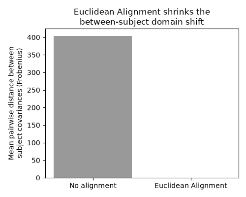
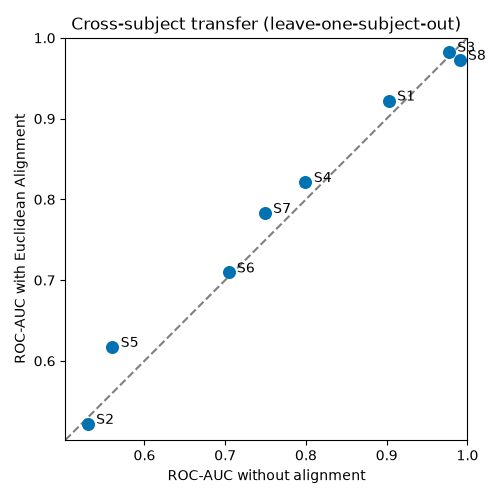

Note
Go to the end to download the full example code.
Euclidean Alignment for cross-subject transfer#
EEG covariance statistics drift from subject to subject (and session to session): the same mental task produces differently-shaped data on each recording. That domain shift is the main reason a decoder trained on one set of subjects transfers poorly to a new one. Euclidean Alignment (EA) removes it with a single, label-free whitening step — cheap enough to put in front of any model, deep or classical [1].
In a systematic evaluation across MOABB motor-imagery datasets, Junqueira,
Aristimunha, Chevallier & de Camargo (2024) [2] showed that aligning each
recording with EA before training a shared deep model improved target-subject
decoding by +4.33% on average and cut convergence time by more than 70% —
for almost no compute and no extra labels. This example reproduces the core
idea on the workhorse CSP+LDA motor-imagery pipeline using
moabb.datasets.preprocessing.EuclideanAlignment.
Each trial \(X_i\) is whitened by the inverse square root of the Euclidean (arithmetic) mean of the per-trial covariances of its recording,
so after alignment every recording shares an identity-like average covariance
and the subjects become comparable. We apply EA per subject (the
transductive, per-recording form — fit_transform() on one recording; it
uses only the trial covariances, never the labels) and compare leave-one-subject
-out decoding with and without it.
# Authors: Bruno Aristimunha <b.aristimunha@gmail.com>
#
# License: BSD (3-clause)
import matplotlib.pyplot as plt
import mne
import numpy as np
from mne.decoding import CSP
from pyriemann.estimation import Covariances
from sklearn.discriminant_analysis import LinearDiscriminantAnalysis as LDA
from sklearn.metrics import roc_auc_score
from sklearn.pipeline import make_pipeline
from sklearn.preprocessing import LabelEncoder
import moabb
from moabb.datasets import BNCI2014_001
from moabb.datasets.preprocessing import EuclideanAlignment
from moabb.paradigms import LeftRightImagery
moabb.set_log_level("info")
mne.set_log_level("WARNING") # keep the gallery output readable
Load the data per subject#
We use the BCI Competition IV 2a dataset (moabb.datasets.BNCI2014_001)
and the moabb.paradigms.LeftRightImagery paradigm (left- vs right-hand
motor imagery, scored with ROC-AUC). We keep the trials of each subject
separate, because Euclidean Alignment is defined per recording.
paradigm = LeftRightImagery()
dataset = BNCI2014_001()
subjects = dataset.subject_list[:8]
# Pull each subject's trials once; X is (n_trials, n_channels, n_times).
data = {}
for subject in subjects:
X, labels, _ = paradigm.get_data(dataset, [subject])
data[subject] = (X, LabelEncoder().fit_transform(labels))
0%| | 0.00/37.2M [00:00<?, ?B/s]
0%| | 8.19k/37.2M [00:00<12:40, 48.8kB/s]
0%| | 56.3k/37.2M [00:00<03:18, 187kB/s]
0%| | 104k/37.2M [00:00<02:40, 231kB/s]
0%|▏ | 161k/37.2M [00:00<02:16, 270kB/s]
1%|▏ | 232k/37.2M [00:00<01:53, 325kB/s]
1%|▎ | 296k/37.2M [00:01<01:47, 341kB/s]
1%|▍ | 409k/37.2M [00:01<01:22, 446kB/s]
1%|▌ | 537k/37.2M [00:01<01:07, 543kB/s]
2%|▋ | 713k/37.2M [00:01<00:52, 697kB/s]
2%|▉ | 921k/37.2M [00:01<00:42, 860kB/s]
3%|█▏ | 1.23M/37.2M [00:01<00:31, 1.16MB/s]
4%|█▌ | 1.54M/37.2M [00:02<00:26, 1.36MB/s]
6%|██ | 2.13M/37.2M [00:02<00:17, 1.99MB/s]
7%|██▋ | 2.71M/37.2M [00:02<00:14, 2.42MB/s]
10%|███▋ | 3.64M/37.2M [00:02<00:10, 3.34MB/s]
12%|████▌ | 4.62M/37.2M [00:02<00:08, 4.06MB/s]
16%|█████▊ | 5.90M/37.2M [00:02<00:06, 5.10MB/s]
21%|███████▌ | 7.62M/37.2M [00:03<00:04, 6.61MB/s]
26%|█████████▋ | 9.70M/37.2M [00:03<00:03, 8.97MB/s]
31%|███████████▌ | 11.6M/37.2M [00:03<00:02, 10.5MB/s]
40%|██████████████▌ | 14.7M/37.2M [00:03<00:01, 15.1MB/s]
45%|████████████████▋ | 16.7M/37.2M [00:03<00:01, 15.8MB/s]
54%|███████████████████▊ | 19.9M/37.2M [00:03<00:00, 18.6MB/s]
63%|███████████████████████▍ | 23.5M/37.2M [00:03<00:00, 23.0MB/s]
71%|██████████████████████████▎ | 26.4M/37.2M [00:03<00:00, 21.5MB/s]
87%|████████████████████████████████▎ | 32.5M/37.2M [00:04<00:00, 26.6MB/s]
0%| | 0.00/37.2M [00:00<?, ?B/s]
100%|██████████████████████████████████████| 37.2M/37.2M [00:00<00:00, 187GB/s]
0%| | 0.00/41.7M [00:00<?, ?B/s]
0%| | 8.19k/41.7M [00:00<13:50, 50.2kB/s]
0%| | 48.1k/41.7M [00:00<04:14, 164kB/s]
0%| | 88.1k/41.7M [00:00<03:27, 200kB/s]
0%|▏ | 136k/41.7M [00:00<02:55, 237kB/s]
0%|▏ | 201k/41.7M [00:00<02:21, 293kB/s]
1%|▎ | 281k/41.7M [00:00<01:55, 358kB/s]
1%|▎ | 337k/41.7M [00:01<01:57, 354kB/s]
1%|▍ | 449k/41.7M [00:01<01:30, 457kB/s]
1%|▌ | 537k/41.7M [00:01<01:25, 482kB/s]
2%|▌ | 656k/41.7M [00:01<01:13, 558kB/s]
2%|▋ | 761k/41.7M [00:01<01:10, 582kB/s]
2%|▊ | 872k/41.7M [00:01<01:06, 612kB/s]
2%|▉ | 969k/41.7M [00:02<01:07, 604kB/s]
3%|▉ | 1.09M/41.7M [00:02<01:03, 642kB/s]
3%|█ | 1.20M/41.7M [00:02<01:01, 654kB/s]
3%|█▏ | 1.37M/41.7M [00:02<00:52, 765kB/s]
4%|█▍ | 1.51M/41.7M [00:02<00:50, 800kB/s]
4%|█▌ | 1.77M/41.7M [00:02<00:38, 1.03MB/s]
5%|█▋ | 1.94M/41.7M [00:03<00:38, 1.04MB/s]
6%|██ | 2.39M/41.7M [00:03<00:25, 1.55MB/s]
7%|██▌ | 2.86M/41.7M [00:03<00:19, 1.95MB/s]
9%|███▏ | 3.59M/41.7M [00:03<00:14, 2.70MB/s]
11%|███▉ | 4.38M/41.7M [00:03<00:11, 3.34MB/s]
13%|████▉ | 5.61M/41.7M [00:03<00:07, 4.57MB/s]
16%|█████▉ | 6.71M/41.7M [00:04<00:06, 5.22MB/s]
21%|███████▊ | 8.85M/41.7M [00:04<00:04, 7.56MB/s]
25%|█████████ | 10.3M/41.7M [00:04<00:03, 7.87MB/s]
34%|████████████▍ | 14.1M/41.7M [00:04<00:02, 12.5MB/s]
44%|████████████████ | 18.2M/41.7M [00:04<00:01, 16.2MB/s]
59%|█████████████████████▋ | 24.4M/41.7M [00:04<00:00, 22.8MB/s]
73%|██████████████████████████▉ | 30.4M/41.7M [00:05<00:00, 26.8MB/s]
88%|████████████████████████████████▋ | 36.9M/41.7M [00:05<00:00, 29.9MB/s]
0%| | 0.00/41.7M [00:00<?, ?B/s]
100%|██████████████████████████████████████| 41.7M/41.7M [00:00<00:00, 261GB/s]
0%| | 0.00/42.5M [00:00<?, ?B/s]
0%| | 8.19k/42.5M [00:00<14:36, 48.4kB/s]
0%| | 56.3k/42.5M [00:00<03:47, 187kB/s]
0%| | 113k/42.5M [00:00<02:47, 252kB/s]
0%|▏ | 168k/42.5M [00:00<02:30, 281kB/s]
1%|▏ | 232k/42.5M [00:00<02:13, 317kB/s]
1%|▎ | 304k/42.5M [00:01<01:59, 352kB/s]
1%|▎ | 369k/42.5M [00:01<01:56, 361kB/s]
1%|▍ | 480k/42.5M [00:01<01:32, 455kB/s]
1%|▌ | 568k/42.5M [00:01<01:28, 475kB/s]
2%|▋ | 705k/42.5M [00:01<01:12, 576kB/s]
2%|▊ | 833k/42.5M [00:01<01:06, 629kB/s]
2%|▉ | 1.00M/42.5M [00:02<00:56, 738kB/s]
3%|█ | 1.13M/42.5M [00:02<00:55, 743kB/s]
3%|█▏ | 1.37M/42.5M [00:02<00:43, 944kB/s]
4%|█▎ | 1.57M/42.5M [00:02<00:40, 1.02MB/s]
4%|█▋ | 1.90M/42.5M [00:02<00:31, 1.30MB/s]
5%|█▉ | 2.24M/42.5M [00:02<00:26, 1.51MB/s]
7%|██▍ | 2.78M/42.5M [00:03<00:19, 2.00MB/s]
8%|██▊ | 3.25M/42.5M [00:03<00:17, 2.23MB/s]
9%|███▍ | 4.01M/42.5M [00:03<00:13, 2.90MB/s]
11%|████ | 4.64M/42.5M [00:03<00:12, 3.15MB/s]
14%|█████▎ | 6.05M/42.5M [00:03<00:07, 4.69MB/s]
18%|██████▌ | 7.54M/42.5M [00:03<00:05, 5.92MB/s]
24%|████████▉ | 10.3M/42.5M [00:04<00:03, 8.95MB/s]
30%|███████████▏ | 12.8M/42.5M [00:04<00:02, 10.8MB/s]
42%|███████████████▍ | 17.7M/42.5M [00:04<00:01, 16.1MB/s]
53%|███████████████████▍ | 22.3M/42.5M [00:04<00:01, 19.4MB/s]
68%|█████████████████████████ | 28.8M/42.5M [00:04<00:00, 24.8MB/s]
83%|██████████████████████████████▊ | 35.3M/42.5M [00:04<00:00, 28.5MB/s]
99%|████████████████████████████████████▍| 41.8M/42.5M [00:05<00:00, 31.0MB/s]
0%| | 0.00/42.5M [00:00<?, ?B/s]
100%|██████████████████████████████████████| 42.5M/42.5M [00:00<00:00, 264GB/s]
0%| | 0.00/44.4M [00:00<?, ?B/s]
0%| | 8.19k/44.4M [00:00<14:39, 50.5kB/s]
0%| | 56.3k/44.4M [00:00<03:48, 194kB/s]
0%| | 113k/44.4M [00:00<02:49, 261kB/s]
0%|▏ | 168k/44.4M [00:00<02:31, 291kB/s]
0%|▏ | 201k/44.4M [00:00<02:51, 258kB/s]
1%|▏ | 264k/44.4M [00:00<02:26, 302kB/s]
1%|▎ | 304k/44.4M [00:01<02:36, 282kB/s]
1%|▎ | 400k/44.4M [00:01<01:56, 379kB/s]
1%|▍ | 512k/44.4M [00:01<01:32, 472kB/s]
1%|▌ | 656k/44.4M [00:01<01:13, 598kB/s]
2%|▋ | 841k/44.4M [00:01<00:57, 759kB/s]
2%|▉ | 1.08M/44.4M [00:01<00:44, 973kB/s]
3%|█ | 1.34M/44.4M [00:02<00:36, 1.17MB/s]
4%|█▍ | 1.73M/44.4M [00:02<00:28, 1.52MB/s]
5%|█▊ | 2.16M/44.4M [00:02<00:22, 1.85MB/s]
6%|██▎ | 2.77M/44.4M [00:02<00:17, 2.41MB/s]
8%|██▊ | 3.40M/44.4M [00:02<00:14, 2.84MB/s]
10%|███▋ | 4.41M/44.4M [00:02<00:10, 3.83MB/s]
12%|████▎ | 5.16M/44.4M [00:03<00:09, 4.05MB/s]
15%|█████▋ | 6.82M/44.4M [00:03<00:06, 5.86MB/s]
20%|███████▎ | 8.70M/44.4M [00:03<00:04, 7.54MB/s]
26%|█████████▌ | 11.4M/44.4M [00:03<00:03, 10.2MB/s]
33%|████████████ | 14.4M/44.4M [00:03<00:02, 12.7MB/s]
43%|███████████████▊ | 18.9M/44.4M [00:03<00:01, 17.0MB/s]
52%|███████████████████▏ | 23.1M/44.4M [00:04<00:01, 19.5MB/s]
64%|███████████████████████▋ | 28.4M/44.4M [00:04<00:00, 23.3MB/s]
78%|████████████████████████████▊ | 34.5M/44.4M [00:04<00:00, 27.4MB/s]
92%|██████████████████████████████████▏ | 41.0M/44.4M [00:04<00:00, 30.5MB/s]
0%| | 0.00/44.4M [00:00<?, ?B/s]
100%|██████████████████████████████████████| 44.4M/44.4M [00:00<00:00, 261GB/s]
0%| | 0.00/44.6M [00:00<?, ?B/s]
0%| | 16.4k/44.6M [00:00<07:42, 96.4kB/s]
0%| | 64.5k/44.6M [00:00<03:35, 207kB/s]
0%| | 86.0k/44.6M [00:00<04:22, 169kB/s]
0%|▏ | 168k/44.6M [00:00<02:31, 294kB/s]
1%|▏ | 241k/44.6M [00:00<02:09, 342kB/s]
1%|▎ | 321k/44.6M [00:01<01:54, 386kB/s]
1%|▎ | 409k/44.6M [00:01<01:43, 429kB/s]
1%|▍ | 505k/44.6M [00:01<01:33, 472kB/s]
1%|▌ | 593k/44.6M [00:01<01:30, 487kB/s]
2%|▌ | 696k/44.6M [00:01<01:23, 524kB/s]
2%|▋ | 793k/44.6M [00:01<01:21, 537kB/s]
2%|▊ | 896k/44.6M [00:02<01:18, 559kB/s]
2%|▊ | 1.00M/44.6M [00:02<01:15, 576kB/s]
2%|▉ | 1.10M/44.6M [00:02<01:13, 588kB/s]
3%|█ | 1.21M/44.6M [00:02<01:12, 594kB/s]
3%|█▏ | 1.32M/44.6M [00:02<01:10, 613kB/s]
3%|█▏ | 1.42M/44.6M [00:02<01:10, 613kB/s]
3%|█▎ | 1.54M/44.6M [00:03<01:08, 626kB/s]
4%|█▍ | 1.65M/44.6M [00:03<01:07, 637kB/s]
4%|█▌ | 1.76M/44.6M [00:03<01:06, 643kB/s]
4%|█▌ | 1.87M/44.6M [00:03<01:05, 649kB/s]
4%|█▋ | 1.98M/44.6M [00:03<01:05, 652kB/s]
5%|█▊ | 2.10M/44.6M [00:03<01:05, 653kB/s]
5%|█▉ | 2.21M/44.6M [00:04<01:04, 656kB/s]
5%|█▉ | 2.32M/44.6M [00:04<01:04, 657kB/s]
5%|██ | 2.43M/44.6M [00:04<01:04, 657kB/s]
6%|██▏ | 2.54M/44.6M [00:04<01:03, 659kB/s]
6%|██▎ | 2.66M/44.6M [00:04<01:03, 659kB/s]
6%|██▎ | 2.77M/44.6M [00:04<01:03, 660kB/s]
6%|██▍ | 2.89M/44.6M [00:05<01:02, 671kB/s]
7%|██▌ | 3.00M/44.6M [00:05<01:02, 667kB/s]
7%|██▋ | 3.11M/44.6M [00:05<01:02, 664kB/s]
7%|██▋ | 3.22M/44.6M [00:05<01:02, 664kB/s]
7%|██▊ | 3.34M/44.6M [00:05<01:02, 662kB/s]
8%|██▉ | 3.45M/44.6M [00:05<01:01, 664kB/s]
8%|███ | 3.56M/44.6M [00:06<01:02, 661kB/s]
8%|███▏ | 3.67M/44.6M [00:06<01:02, 660kB/s]
8%|███▏ | 3.78M/44.6M [00:06<01:01, 661kB/s]
9%|███▎ | 3.90M/44.6M [00:06<01:00, 674kB/s]
9%|███▍ | 4.02M/44.6M [00:06<01:00, 669kB/s]
9%|███▌ | 4.14M/44.6M [00:06<00:59, 680kB/s]
10%|███▋ | 4.26M/44.6M [00:07<00:58, 688kB/s]
10%|███▋ | 4.38M/44.6M [00:07<00:57, 694kB/s]
10%|███▊ | 4.50M/44.6M [00:07<00:56, 712kB/s]
10%|███▉ | 4.62M/44.6M [00:07<00:56, 709kB/s]
11%|████ | 4.75M/44.6M [00:07<00:55, 722kB/s]
11%|████▏ | 4.88M/44.6M [00:07<00:54, 732kB/s]
11%|████▎ | 5.02M/44.6M [00:08<00:52, 753kB/s]
12%|████▍ | 5.15M/44.6M [00:08<00:51, 767kB/s]
12%|████▌ | 5.29M/44.6M [00:08<00:50, 776kB/s]
12%|████▋ | 5.44M/44.6M [00:08<00:48, 812kB/s]
13%|████▊ | 5.58M/44.6M [00:08<00:47, 824kB/s]
13%|████▉ | 5.74M/44.6M [00:09<00:45, 858kB/s]
13%|█████ | 5.90M/44.6M [00:09<00:44, 869kB/s]
14%|█████▏ | 6.06M/44.6M [00:09<00:42, 902kB/s]
14%|█████▎ | 6.24M/44.6M [00:09<00:40, 943kB/s]
14%|█████▍ | 6.42M/44.6M [00:09<00:39, 970kB/s]
15%|█████▍ | 6.60M/44.6M [00:09<00:37, 1.01MB/s]
15%|█████▋ | 6.79M/44.6M [00:10<00:36, 1.04MB/s]
16%|█████▊ | 7.00M/44.6M [00:10<00:34, 1.09MB/s]
16%|█████▉ | 7.21M/44.6M [00:10<00:33, 1.13MB/s]
17%|██████▏ | 7.42M/44.6M [00:10<00:31, 1.17MB/s]
17%|██████▎ | 7.66M/44.6M [00:10<00:29, 1.23MB/s]
18%|██████▌ | 7.90M/44.6M [00:10<00:28, 1.28MB/s]
18%|██████▊ | 8.14M/44.6M [00:11<00:27, 1.34MB/s]
19%|██████▉ | 8.41M/44.6M [00:11<00:25, 1.40MB/s]
19%|███████▏ | 8.68M/44.6M [00:11<00:24, 1.46MB/s]
20%|███████▍ | 8.97M/44.6M [00:11<00:23, 1.53MB/s]
21%|███████▋ | 9.26M/44.6M [00:11<00:22, 1.59MB/s]
21%|███████▉ | 9.58M/44.6M [00:11<00:20, 1.68MB/s]
22%|████████▏ | 9.91M/44.6M [00:12<00:19, 1.75MB/s]
23%|████████▌ | 10.3M/44.6M [00:12<00:18, 1.83MB/s]
24%|████████▊ | 10.6M/44.6M [00:12<00:17, 1.92MB/s]
25%|█████████▏ | 11.0M/44.6M [00:12<00:16, 2.02MB/s]
26%|█████████▍ | 11.4M/44.6M [00:12<00:15, 2.10MB/s]
26%|█████████▊ | 11.8M/44.6M [00:12<00:14, 2.21MB/s]
27%|██████████▏ | 12.2M/44.6M [00:13<00:13, 2.32MB/s]
28%|██████████▌ | 12.7M/44.6M [00:13<00:13, 2.43MB/s]
30%|██████████▉ | 13.2M/44.6M [00:13<00:12, 2.54MB/s]
31%|███████████▎ | 13.7M/44.6M [00:13<00:11, 2.67MB/s]
32%|███████████▊ | 14.2M/44.6M [00:13<00:10, 2.78MB/s]
33%|████████████▏ | 14.7M/44.6M [00:13<00:10, 2.91MB/s]
34%|████████████▋ | 15.3M/44.6M [00:14<00:09, 3.04MB/s]
36%|█████████████▏ | 15.9M/44.6M [00:14<00:09, 3.18MB/s]
37%|█████████████▋ | 16.5M/44.6M [00:14<00:08, 3.33MB/s]
39%|██████████████▎ | 17.2M/44.6M [00:14<00:07, 3.47MB/s]
40%|██████████████▊ | 17.9M/44.6M [00:14<00:07, 3.63MB/s]
42%|███████████████▍ | 18.6M/44.6M [00:14<00:06, 3.80MB/s]
43%|████████████████ | 19.3M/44.6M [00:15<00:06, 4.18MB/s]
45%|████████████████▋ | 20.1M/44.6M [00:15<00:06, 4.08MB/s]
47%|█████████████████▎ | 20.9M/44.6M [00:15<00:05, 4.50MB/s]
49%|██████████████████ | 21.7M/44.6M [00:15<00:04, 4.78MB/s]
51%|██████████████████▊ | 22.6M/44.6M [00:15<00:04, 4.72MB/s]
53%|███████████████████▌ | 23.5M/44.6M [00:15<00:04, 5.08MB/s]
55%|████████████████████▎ | 24.4M/44.6M [00:16<00:03, 5.05MB/s]
57%|█████████████████████ | 25.4M/44.6M [00:16<00:03, 5.44MB/s]
59%|█████████████████████▋ | 26.2M/44.6M [00:16<00:04, 4.57MB/s]
61%|██████████████████████▋ | 27.4M/44.6M [00:16<00:02, 5.80MB/s]
63%|███████████████████████▎ | 28.2M/44.6M [00:16<00:03, 5.09MB/s]
65%|███████████████████████▉ | 28.9M/44.6M [00:16<00:02, 5.37MB/s]
67%|████████████████████████▋ | 29.7M/44.6M [00:17<00:02, 5.14MB/s]
68%|█████████████████████████▎ | 30.5M/44.6M [00:17<00:02, 5.00MB/s]
70%|█████████████████████████▉ | 31.3M/44.6M [00:17<00:02, 4.79MB/s]
72%|██████████████████████████▋ | 32.2M/44.6M [00:17<00:02, 4.99MB/s]
74%|███████████████████████████▍ | 33.0M/44.6M [00:17<00:02, 4.99MB/s]
76%|████████████████████████████ | 33.9M/44.6M [00:17<00:02, 5.02MB/s]
78%|████████████████████████████▊ | 34.7M/44.6M [00:18<00:01, 5.07MB/s]
80%|█████████████████████████████▌ | 35.6M/44.6M [00:18<00:01, 5.11MB/s]
82%|██████████████████████████████▎ | 36.5M/44.6M [00:18<00:01, 5.16MB/s]
84%|███████████████████████████████ | 37.4M/44.6M [00:18<00:01, 5.22MB/s]
86%|███████████████████████████████▊ | 38.4M/44.6M [00:18<00:01, 5.29MB/s]
88%|████████████████████████████████▋ | 39.3M/44.6M [00:18<00:00, 5.36MB/s]
90%|█████████████████████████████████▍ | 40.3M/44.6M [00:19<00:00, 5.42MB/s]
92%|██████████████████████████████████▏ | 41.2M/44.6M [00:19<00:00, 5.48MB/s]
95%|███████████████████████████████████ | 42.2M/44.6M [00:19<00:00, 5.53MB/s]
97%|███████████████████████████████████▊ | 43.2M/44.6M [00:19<00:00, 5.59MB/s]
99%|████████████████████████████████████▌| 44.1M/44.6M [00:19<00:00, 5.63MB/s]
0%| | 0.00/44.6M [00:00<?, ?B/s]
100%|██████████████████████████████████████| 44.6M/44.6M [00:00<00:00, 296GB/s]
0%| | 0.00/43.4M [00:00<?, ?B/s]
0%| | 8.19k/43.4M [00:00<14:28, 50.0kB/s]
0%| | 56.3k/43.4M [00:00<03:44, 193kB/s]
0%| | 96.3k/43.4M [00:00<03:20, 216kB/s]
0%|▏ | 161k/43.4M [00:00<02:31, 286kB/s]
1%|▏ | 256k/43.4M [00:00<01:50, 392kB/s]
1%|▎ | 337k/43.4M [00:00<01:40, 427kB/s]
1%|▍ | 440k/43.4M [00:01<01:27, 493kB/s]
1%|▍ | 552k/43.4M [00:01<01:17, 552kB/s]
2%|▌ | 688k/43.4M [00:01<01:06, 638kB/s]
2%|▊ | 864k/43.4M [00:01<00:55, 772kB/s]
2%|▉ | 1.01M/43.4M [00:01<00:52, 805kB/s]
3%|█ | 1.28M/43.4M [00:01<00:39, 1.06MB/s]
4%|█▎ | 1.60M/43.4M [00:02<00:31, 1.33MB/s]
4%|█▌ | 1.90M/43.4M [00:02<00:28, 1.48MB/s]
6%|██ | 2.46M/43.4M [00:02<00:19, 2.06MB/s]
7%|██▍ | 2.92M/43.4M [00:02<00:17, 2.29MB/s]
8%|███▏ | 3.68M/43.4M [00:02<00:13, 3.00MB/s]
10%|███▊ | 4.47M/43.4M [00:02<00:10, 3.55MB/s]
12%|████▌ | 5.31M/43.4M [00:03<00:09, 4.02MB/s]
14%|█████▎ | 6.19M/43.4M [00:03<00:08, 4.42MB/s]
16%|██████ | 7.11M/43.4M [00:03<00:07, 4.78MB/s]
19%|██████▉ | 8.08M/43.4M [00:03<00:06, 5.12MB/s]
21%|███████▊ | 9.10M/43.4M [00:03<00:06, 5.44MB/s]
23%|████████▋ | 10.2M/43.4M [00:03<00:05, 5.76MB/s]
26%|█████████▌ | 11.3M/43.4M [00:04<00:05, 6.08MB/s]
29%|██████████▌ | 12.4M/43.4M [00:04<00:04, 6.39MB/s]
32%|███████████▋ | 13.7M/43.4M [00:04<00:04, 6.71MB/s]
34%|████████████▊ | 15.0M/43.4M [00:04<00:04, 7.05MB/s]
38%|█████████████▉ | 16.3M/43.4M [00:04<00:03, 7.40MB/s]
41%|███████████████ | 17.7M/43.4M [00:04<00:03, 7.79MB/s]
44%|████████████████▍ | 19.2M/43.4M [00:05<00:02, 8.17MB/s]
48%|█████████████████▋ | 20.8M/43.4M [00:05<00:02, 8.59MB/s]
52%|███████████████████▏ | 22.4M/43.4M [00:05<00:02, 9.03MB/s]
56%|████████████████████▌ | 24.2M/43.4M [00:05<00:02, 9.47MB/s]
60%|██████████████████████▏ | 26.0M/43.4M [00:05<00:01, 9.94MB/s]
64%|███████████████████████▊ | 27.9M/43.4M [00:05<00:01, 10.4MB/s]
69%|█████████████████████████▍ | 29.9M/43.4M [00:06<00:01, 11.0MB/s]
74%|███████████████████████████▎ | 32.0M/43.4M [00:06<00:00, 11.5MB/s]
79%|█████████████████████████████▏ | 34.2M/43.4M [00:06<00:00, 12.1MB/s]
84%|███████████████████████████████ | 36.5M/43.4M [00:06<00:00, 12.7MB/s]
90%|█████████████████████████████████▏ | 38.9M/43.4M [00:06<00:00, 13.3MB/s]
96%|███████████████████████████████████▎ | 41.5M/43.4M [00:06<00:00, 14.0MB/s]
0%| | 0.00/43.4M [00:00<?, ?B/s]
100%|██████████████████████████████████████| 43.4M/43.4M [00:00<00:00, 290GB/s]
0%| | 0.00/42.8M [00:00<?, ?B/s]
0%| | 8.19k/42.8M [00:00<14:40, 48.6kB/s]
0%| | 56.3k/42.8M [00:00<03:48, 187kB/s]
0%| | 96.3k/42.8M [00:00<03:24, 209kB/s]
0%|▏ | 161k/42.8M [00:00<02:34, 276kB/s]
1%|▏ | 216k/42.8M [00:00<02:25, 293kB/s]
1%|▎ | 296k/42.8M [00:01<02:00, 352kB/s]
1%|▎ | 360k/42.8M [00:01<01:57, 360kB/s]
1%|▍ | 465k/42.8M [00:01<01:35, 441kB/s]
1%|▍ | 537k/42.8M [00:01<01:37, 435kB/s]
2%|▌ | 673k/42.8M [00:01<01:17, 545kB/s]
2%|▋ | 761k/42.8M [00:01<01:18, 536kB/s]
2%|▊ | 849k/42.8M [00:02<01:19, 531kB/s]
2%|▊ | 936k/42.8M [00:02<01:19, 526kB/s]
2%|▉ | 1.05M/42.8M [00:02<01:13, 567kB/s]
3%|█ | 1.15M/42.8M [00:02<01:11, 579kB/s]
3%|█▏ | 1.27M/42.8M [00:02<01:07, 618kB/s]
3%|█▏ | 1.38M/42.8M [00:02<01:05, 629kB/s]
4%|█▍ | 1.56M/42.8M [00:03<00:54, 751kB/s]
4%|█▍ | 1.67M/42.8M [00:03<00:56, 722kB/s]
4%|█▋ | 1.91M/42.8M [00:03<00:43, 930kB/s]
5%|█▊ | 2.07M/42.8M [00:03<00:43, 933kB/s]
6%|██ | 2.44M/42.8M [00:03<00:31, 1.30MB/s]
7%|██▍ | 2.87M/42.8M [00:03<00:23, 1.67MB/s]
8%|██▉ | 3.38M/42.8M [00:04<00:19, 2.07MB/s]
9%|███▍ | 4.00M/42.8M [00:04<00:15, 2.53MB/s]
11%|████ | 4.72M/42.8M [00:04<00:12, 3.04MB/s]
13%|████▊ | 5.61M/42.8M [00:04<00:10, 3.70MB/s]
15%|█████▋ | 6.62M/42.8M [00:04<00:08, 4.37MB/s]
18%|██████▊ | 7.88M/42.8M [00:04<00:06, 5.29MB/s]
22%|███████▉ | 9.26M/42.8M [00:05<00:05, 6.13MB/s]
25%|█████████▎ | 10.8M/42.8M [00:05<00:04, 7.02MB/s]
29%|██████████▊ | 12.4M/42.8M [00:05<00:03, 7.81MB/s]
33%|████████████▏ | 14.2M/42.8M [00:05<00:03, 8.49MB/s]
37%|█████████████▊ | 16.0M/42.8M [00:05<00:02, 9.11MB/s]
42%|███████████████▍ | 17.9M/42.8M [00:05<00:02, 9.72MB/s]
46%|█████████████████▏ | 19.8M/42.8M [00:06<00:02, 10.3MB/s]
51%|██████████████████▉ | 21.9M/42.8M [00:06<00:01, 10.9MB/s]
56%|████████████████████▊ | 24.1M/42.8M [00:06<00:01, 11.5MB/s]
62%|██████████████████████▊ | 26.4M/42.8M [00:06<00:01, 12.1MB/s]
67%|████████████████████████▉ | 28.8M/42.8M [00:06<00:01, 12.7MB/s]
73%|███████████████████████████ | 31.4M/42.8M [00:06<00:00, 13.4MB/s]
79%|█████████████████████████████▍ | 34.0M/42.8M [00:07<00:00, 14.1MB/s]
86%|███████████████████████████████▊ | 36.8M/42.8M [00:07<00:00, 14.8MB/s]
93%|██████████████████████████████████▎ | 39.8M/42.8M [00:07<00:00, 15.5MB/s]
0%| | 0.00/42.8M [00:00<?, ?B/s]
100%|██████████████████████████████████████| 42.8M/42.8M [00:00<00:00, 250GB/s]
0%| | 0.00/42.2M [00:00<?, ?B/s]
0%| | 8.19k/42.2M [00:00<14:05, 50.0kB/s]
0%| | 56.3k/42.2M [00:00<03:38, 193kB/s]
0%|▏ | 144k/42.2M [00:00<02:00, 349kB/s]
0%|▏ | 193k/42.2M [00:00<02:08, 328kB/s]
1%|▎ | 329k/42.2M [00:00<01:22, 509kB/s]
1%|▍ | 417k/42.2M [00:00<01:20, 519kB/s]
2%|▌ | 656k/42.2M [00:01<00:50, 827kB/s]
2%|▊ | 881k/42.2M [00:01<00:41, 999kB/s]
3%|█ | 1.28M/42.2M [00:01<00:28, 1.45MB/s]
4%|█▍ | 1.70M/42.2M [00:01<00:22, 1.79MB/s]
6%|██ | 2.42M/42.2M [00:01<00:15, 2.58MB/s]
7%|██▋ | 3.06M/42.2M [00:01<00:13, 2.98MB/s]
10%|███▊ | 4.42M/42.2M [00:02<00:08, 4.59MB/s]
14%|█████ | 5.72M/42.2M [00:02<00:06, 5.59MB/s]
17%|██████▍ | 7.39M/42.2M [00:02<00:04, 6.98MB/s]
22%|████████ | 9.14M/42.2M [00:02<00:04, 8.09MB/s]
26%|█████████▋ | 11.0M/42.2M [00:02<00:03, 9.04MB/s]
31%|███████████▎ | 12.9M/42.2M [00:02<00:02, 9.86MB/s]
35%|█████████████ | 15.0M/42.2M [00:03<00:02, 10.6MB/s]
40%|██████████████▉ | 17.1M/42.2M [00:03<00:02, 11.3MB/s]
46%|████████████████▉ | 19.3M/42.2M [00:03<00:01, 12.0MB/s]
51%|███████████████████ | 21.7M/42.2M [00:03<00:01, 12.7MB/s]
57%|█████████████████████▏ | 24.2M/42.2M [00:03<00:01, 13.4MB/s]
63%|███████████████████████▍ | 26.8M/42.2M [00:03<00:01, 14.1MB/s]
70%|█████████████████████████▊ | 29.5M/42.2M [00:04<00:00, 14.9MB/s]
77%|████████████████████████████▎ | 32.3M/42.2M [00:04<00:00, 15.6MB/s]
84%|██████████████████████████████▉ | 35.3M/42.2M [00:04<00:00, 16.4MB/s]
91%|█████████████████████████████████▋ | 38.5M/42.2M [00:04<00:00, 17.2MB/s]
99%|████████████████████████████████████▌| 41.8M/42.2M [00:04<00:00, 18.1MB/s]
0%| | 0.00/42.2M [00:00<?, ?B/s]
100%|██████████████████████████████████████| 42.2M/42.2M [00:00<00:00, 259GB/s]
0%| | 0.00/45.0M [00:00<?, ?B/s]
0%| | 8.19k/45.0M [00:00<15:23, 48.7kB/s]
0%| | 56.3k/45.0M [00:00<03:59, 188kB/s]
0%| | 113k/45.0M [00:00<02:57, 253kB/s]
0%|▏ | 176k/45.0M [00:00<02:29, 301kB/s]
1%|▏ | 241k/45.0M [00:00<02:16, 328kB/s]
1%|▎ | 321k/45.0M [00:01<01:58, 377kB/s]
1%|▎ | 400k/45.0M [00:01<01:49, 407kB/s]
1%|▍ | 512k/45.0M [00:01<01:31, 487kB/s]
1%|▌ | 656k/45.0M [00:01<01:14, 600kB/s]
2%|▋ | 841k/45.0M [00:01<00:59, 748kB/s]
2%|▉ | 1.10M/45.0M [00:01<00:44, 993kB/s]
3%|█ | 1.34M/45.0M [00:02<00:39, 1.12MB/s]
4%|█▍ | 1.82M/45.0M [00:02<00:26, 1.63MB/s]
5%|█▋ | 2.10M/45.0M [00:02<00:26, 1.64MB/s]
6%|██▎ | 2.89M/45.0M [00:02<00:16, 2.53MB/s]
8%|██▉ | 3.50M/45.0M [00:02<00:14, 2.86MB/s]
11%|███▉ | 4.79M/45.0M [00:02<00:09, 4.27MB/s]
14%|█████ | 6.17M/45.0M [00:03<00:07, 5.41MB/s]
18%|██████▌ | 7.98M/45.0M [00:03<00:05, 6.98MB/s]
22%|████████ | 9.87M/45.0M [00:03<00:04, 8.21MB/s]
26%|█████████▊ | 11.9M/45.0M [00:03<00:03, 9.27MB/s]
31%|███████████▍ | 14.0M/45.0M [00:03<00:03, 10.2MB/s]
36%|█████████████▎ | 16.2M/45.0M [00:03<00:02, 11.0MB/s]
41%|███████████████▏ | 18.5M/45.0M [00:04<00:02, 11.8MB/s]
46%|█████████████████▏ | 20.9M/45.0M [00:04<00:01, 12.5MB/s]
52%|███████████████████▏ | 23.4M/45.0M [00:04<00:01, 13.2MB/s]
58%|█████████████████████▍ | 26.1M/45.0M [00:04<00:01, 15.2MB/s]
63%|███████████████████████▍ | 28.5M/45.0M [00:04<00:00, 17.1MB/s]
67%|████████████████████████▉ | 30.3M/45.0M [00:04<00:00, 16.1MB/s]
71%|██████████████████████████▎ | 32.0M/45.0M [00:04<00:00, 14.4MB/s]
78%|████████████████████████████▋ | 34.9M/45.0M [00:05<00:00, 16.9MB/s]
83%|██████████████████████████████▉ | 37.6M/45.0M [00:05<00:00, 19.3MB/s]
88%|████████████████████████████████▌ | 39.6M/45.0M [00:05<00:00, 18.0MB/s]
92%|██████████████████████████████████▏ | 41.6M/45.0M [00:05<00:00, 16.2MB/s]
0%| | 0.00/45.0M [00:00<?, ?B/s]
100%|██████████████████████████████████████| 45.0M/45.0M [00:00<00:00, 260GB/s]
0%| | 0.00/46.3M [00:00<?, ?B/s]
0%| | 8.19k/46.3M [00:00<15:18, 50.4kB/s]
0%| | 56.3k/46.3M [00:00<03:58, 194kB/s]
0%| | 104k/46.3M [00:00<03:13, 239kB/s]
0%|▏ | 161k/46.3M [00:00<02:44, 280kB/s]
1%|▏ | 232k/46.3M [00:00<02:17, 336kB/s]
1%|▏ | 289k/46.3M [00:00<02:16, 338kB/s]
1%|▎ | 369k/46.3M [00:01<01:58, 387kB/s]
1%|▍ | 457k/46.3M [00:01<01:45, 434kB/s]
1%|▍ | 528k/46.3M [00:01<01:45, 435kB/s]
1%|▌ | 665k/46.3M [00:01<01:22, 556kB/s]
2%|▋ | 753k/46.3M [00:01<01:22, 550kB/s]
2%|▊ | 912k/46.3M [00:01<01:06, 679kB/s]
2%|▉ | 1.10M/46.3M [00:02<00:55, 813kB/s]
3%|█ | 1.24M/46.3M [00:02<00:54, 831kB/s]
3%|█▏ | 1.54M/46.3M [00:02<00:39, 1.14MB/s]
4%|█▍ | 1.74M/46.3M [00:02<00:38, 1.16MB/s]
5%|█▋ | 2.18M/46.3M [00:02<00:27, 1.60MB/s]
5%|█▉ | 2.49M/46.3M [00:02<00:25, 1.69MB/s]
7%|██▌ | 3.15M/46.3M [00:03<00:17, 2.40MB/s]
8%|███ | 3.86M/46.3M [00:03<00:14, 2.98MB/s]
10%|███▊ | 4.83M/46.3M [00:03<00:10, 3.85MB/s]
13%|████▊ | 5.95M/46.3M [00:03<00:08, 4.75MB/s]
16%|█████▉ | 7.38M/46.3M [00:03<00:06, 5.93MB/s]
19%|███████▏ | 8.98M/46.3M [00:03<00:05, 7.07MB/s]
24%|████████▊ | 11.0M/46.3M [00:04<00:04, 8.63MB/s]
28%|██████████▍ | 13.1M/46.3M [00:04<00:03, 9.91MB/s]
33%|████████████▎ | 15.3M/46.3M [00:04<00:02, 11.0MB/s]
38%|██████████████ | 17.7M/46.3M [00:04<00:02, 12.0MB/s]
43%|████████████████ | 20.1M/46.3M [00:04<00:02, 12.9MB/s]
49%|██████████████████▏ | 22.7M/46.3M [00:04<00:01, 13.7MB/s]
55%|████████████████████▎ | 25.4M/46.3M [00:05<00:01, 14.5MB/s]
61%|██████████████████████▌ | 28.2M/46.3M [00:05<00:01, 15.3MB/s]
67%|████████████████████████▉ | 31.2M/46.3M [00:05<00:00, 16.1MB/s]
74%|███████████████████████████▍ | 34.3M/46.3M [00:05<00:00, 17.0MB/s]
81%|██████████████████████████████ | 37.5M/46.3M [00:05<00:00, 17.8MB/s]
89%|████████████████████████████████▊ | 41.0M/46.3M [00:05<00:00, 18.8MB/s]
96%|███████████████████████████████████▋ | 44.6M/46.3M [00:06<00:00, 19.7MB/s]
0%| | 0.00/46.3M [00:00<?, ?B/s]
100%|██████████████████████████████████████| 46.3M/46.3M [00:00<00:00, 255GB/s]
Euclidean Alignment reduces the between-subject covariance shift#
Before any classification, we can see what EA does. For every subject we compute the mean trial covariance, then measure how far apart the subjects are as the average pairwise distance between those mean covariances. EA pulls them together — each subject’s mean covariance becomes ~identity.
def mean_covariance(X):
"""Euclidean mean of the per-trial covariances of one recording."""
return Covariances("oas").transform(X).mean(axis=0)
def between_subject_dispersion(means):
"""Average pairwise Frobenius distance between subject mean covariances."""
dists = [
np.linalg.norm(means[i] - means[j])
for i in range(len(means))
for j in range(i + 1, len(means))
]
return float(np.mean(dists))
raw_means, aligned_means = [], []
for subject in subjects:
X, _ = data[subject]
raw_means.append(mean_covariance(X))
# Per-subject (transductive) Euclidean Alignment: label-free, leakage-free.
X_aligned = EuclideanAlignment().fit_transform(X)
aligned_means.append(mean_covariance(X_aligned))
dispersion = {
"No alignment": between_subject_dispersion(raw_means),
"Euclidean Alignment": between_subject_dispersion(aligned_means),
}
print("Between-subject covariance dispersion:", dispersion)
fig, ax = plt.subplots(figsize=(5, 4))
ax.bar(dispersion.keys(), dispersion.values(), color=["#999999", "#0072B2"])
ax.set_ylabel("Mean pairwise distance between\nsubject covariances (Frobenius)")
ax.set_title("Euclidean Alignment shrinks the\nbetween-subject domain shift")
fig.tight_layout()
plt.show()

Between-subject covariance dispersion: {'No alignment': 404.171451512519, 'Euclidean Alignment': 0.5087545462974774}
Leave-one-subject-out decoding, with and without alignment#
Now the payoff. For each held-out subject we train a standard CSP+LDA pipeline on the other subjects and test on the held-out one — the cross-subject transfer setting. We run it twice: on the raw trials, and on trials that have each been Euclidean-aligned per subject.
CSP+LDA is a Euclidean classifier and is therefore sensitive to the covariance shift EA removes. (Riemannian tangent-space pipelines already recenter covariances internally, so they benefit less — EA is most valuable for Euclidean and deep models, exactly the setting of [2].)
def decode_loso(aligned):
"""Leave-one-subject-out ROC-AUC, optionally with per-subject EA."""
scores = []
for test_subject in subjects:
train_subjects = [s for s in subjects if s != test_subject]
def prep(subject):
X, y = data[subject]
if aligned:
X = EuclideanAlignment().fit_transform(X)
return X, y
X_train = np.concatenate([prep(s)[0] for s in train_subjects])
y_train = np.concatenate([prep(s)[1] for s in train_subjects])
X_test, y_test = prep(test_subject)
clf = make_pipeline(CSP(n_components=8), LDA())
clf.fit(X_train, y_train)
proba = clf.predict_proba(X_test)[:, 1]
scores.append(roc_auc_score(y_test, proba))
return np.array(scores)
raw_scores = decode_loso(aligned=False)
aligned_scores = decode_loso(aligned=True)
for subject, raw, aligned in zip(subjects, raw_scores, aligned_scores):
print(f"subject {subject}: raw={raw:.3f} aligned={aligned:.3f}")
print(
f"mean: raw={raw_scores.mean():.3f} aligned={aligned_scores.mean():.3f} "
f"(EA wins on {(aligned_scores > raw_scores).sum()}/{len(subjects)} subjects)"
)
subject 1: raw=0.903 aligned=0.922
subject 2: raw=0.530 aligned=0.522
subject 3: raw=0.977 aligned=0.983
subject 4: raw=0.799 aligned=0.821
subject 5: raw=0.560 aligned=0.617
subject 6: raw=0.704 aligned=0.709
subject 7: raw=0.749 aligned=0.783
subject 8: raw=0.990 aligned=0.973
mean: raw=0.777 aligned=0.791 (EA wins on 6/8 subjects)
A point per held-out subject: above the diagonal means Euclidean Alignment helped that subject’s cross-subject transfer.
fig, ax = plt.subplots(figsize=(5, 5))
ax.scatter(raw_scores, aligned_scores, c="#0072B2", s=70, zorder=3)
for subject, raw, aligned in zip(subjects, raw_scores, aligned_scores):
ax.annotate(f"S{subject}", (raw, aligned), textcoords="offset points", xytext=(6, 0))
lims = [min(raw_scores.min(), aligned_scores.min()) - 0.02, 1.0]
ax.plot(lims, lims, "--", color="grey", zorder=1)
ax.set_xlim(lims)
ax.set_ylim(lims)
ax.set_xlabel("ROC-AUC without alignment")
ax.set_ylabel("ROC-AUC with Euclidean Alignment")
ax.set_title("Cross-subject transfer (leave-one-subject-out)")
ax.set_aspect("equal")
fig.tight_layout()
plt.show()

Using it inside a MOABB evaluation#
Above we used the transductive per-recording form (fit_transform on
each subject). EuclideanAlignment is
also a regular scikit-learn transformer, so its inductive, leakage-free
form drops straight into a pipeline for any MOABB evaluation: fit learns
the reference whitener from the training trials only and transform reuses
it on the test trials. For example:
from moabb.evaluations import CrossSubjectEvaluation
pipelines = {
"EA+CSP+LDA": make_pipeline(
EuclideanAlignment(), CSP(n_components=8), LDA()
)
}
evaluation = CrossSubjectEvaluation(paradigm=paradigm, datasets=[dataset])
results = evaluation.process(pipelines)
For the full deep-learning story — where EA shines most, improving target accuracy by +4.33% and cutting training time by >70% — see Junqueira et al. (2024) [2].
References#
Total running time of the script: (2 minutes 39.641 seconds)
Estimated memory usage: 2416 MB
Run this example